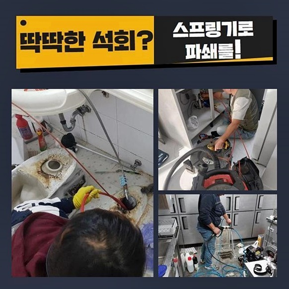
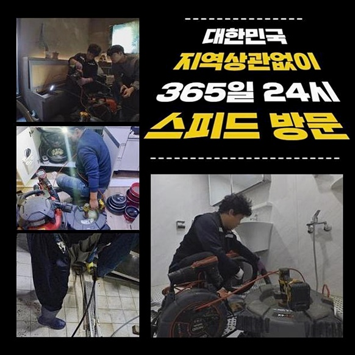
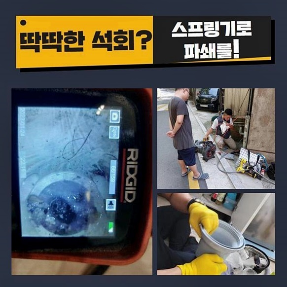
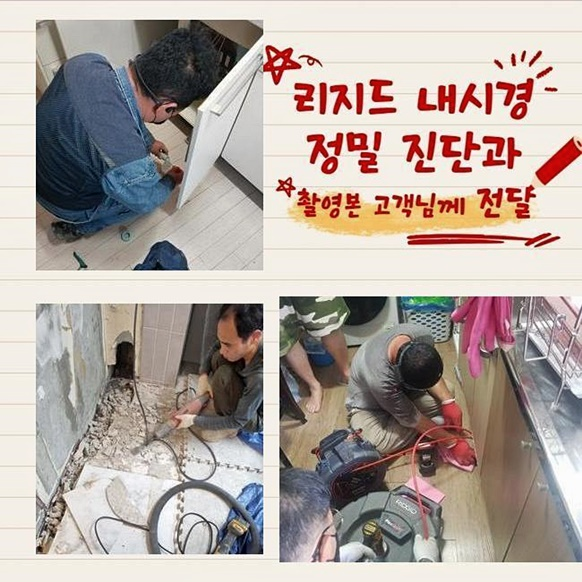
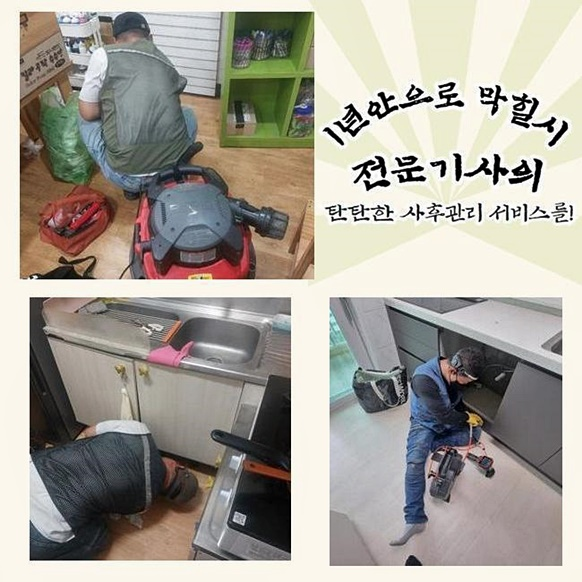
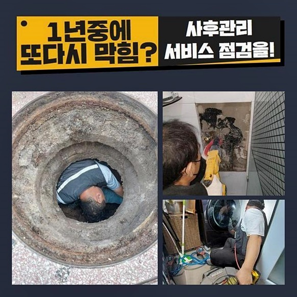
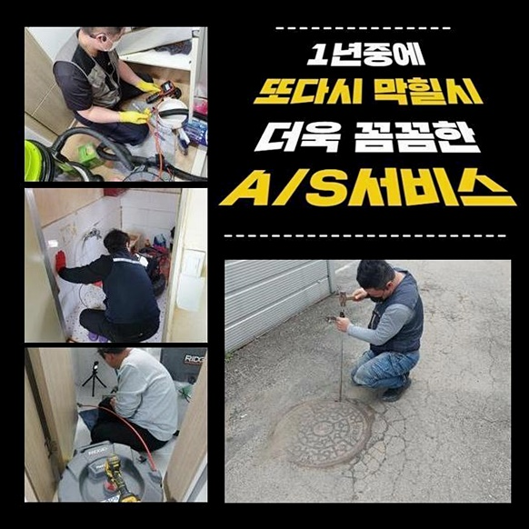

🏠 동대문 신설동화장실하수구막힘 청량리동 배수구뚫기 누수탐지
용인시 처인구 배관막힘 전문 시공 후기

📋 작업 개요
- 위치: 용인시 처인구, 수원시 영통구, 화성시 동탄
- 서비스 유형: 배관막힘, 누수수리, 고압세척, 내시경점검
- 작업 일시:
- 업체명: 하수구수사대 (010-5615-2118)
🔍 문제 상황
동대문 신설동화장실하수구막힘 청량리동 배수구뚫기 누수탐지
배수구가 막히면 기본적인 생활양식을 유지시킴에있어서 곤란이 밀려올거에요
지금부턴 배수관이 막혀버린 현장을 보고 이런저런 사항들을 안내해드릴테니 천천히 읽으시면 이점이 있으실거에요
그렇다면 현장리뷰를 해보겠습니다
가정에서 생기는 것 중에 하나로 화장실공간의 배수가 안되는 증상을 들어볼 수 있겠죠
또한 세탁기들이 놓여진 장소라면 물빠짐이 이뤄지는 시점에 옷감 잔해나 먼지같은것이 여러 이물들이 흘러가서 하수관을 막아서는 현상들이 자주 나타나죠
배수관이 막혀버렸을 경우에 애먼 곳에서 역류들이 생겨나고 깊숙한 부분까지 오염원들이 들어찬 증상을 볼 수 있답니다
내방한 장소에서는 욕실내부에서 물들을 배출시킬때 발코니로 오수가 올라오는 상태라고 연락을 하셨는데요
저희의경우 오래도록 막히는 문제들을 시정하기에 대부분 현장을 추단해보고 진단에 착수합니다
이때 있어야하는 장비들을 짊어지고 분이 계신곳에 당도했어요
보통 배수관이 오류에 빠지는 사태는 자주 있는 일이라 어떤 이유다라고 설명할 수 없겠으나 대체로 머리카락들과 기름때들을 꼽을 수 있죠
질긴 머리카락이나 흡착물이 섞였을땐 딱딱해져 배수관을 막아섭니다

🔎 원인 분석
💡 전문가 진단: 정밀 진단 장비를 사용하여 슬러지의 고착 여부를 판명하고 타격/세척 작업을 실시했습니다.
그리고 한 군데가 막히게되어 여기저기 악영향들을 미치는 상황일 시 세척이 힘들어집니다
장비를 운용치않고 시정이 어려우므로 전문진이 동반되어야한다고 말씀드리고 싶어요
도착한 뒤 세탁기가 있는곳으로 가보았더니 배수구에서는 범람한 오염원을 확인했죠
냄새까지 올라오게 하는것을 보았을때 긴 기간에 걸쳐 이물들이 쌓여서 증세들을 가중시킨걸로 결론지었어요
다양한 슬러지들이 주된 원인인것을 어렵지않게 알고자했어요
안쪽에 석션을 이용하여 잔해 청소를 수행했습니다
즉시 뚫릴거란 예상은 멀리했지만 예상한것만큼 뚜렷한 해결은 없었습니다
심각하지 않은 상황일 시 석션장비로 시정이 되는 사례도 물론 있답니다
하지만 오늘의 문제는 간소하게 해결할 수 없어 분쇄를 하기에 이르렀는데요
하지만 즉시 해당 장비들을 조심하지않고 사용하면 배수관을 손상시킬 수 있어서 안측을 내시경카메라로 꼼꼼히 들여다보고 작업하기로 했어요
내시경을 이용해 하수관을 막히게하는 머리카락등과 잔해물들을 파악해보았습니다
관리를 하지않고 긴 기간동안에 축적되는 바람에 구간마다 자리를 잡고 있었고 슬러지성분으로 변하여 원활하게 내려가질 못했죠

🔧 작업 과정
일반적으로 슬러지들은 주방에 있는 배수구멍 밖으로 목격되지만 다른 내부에서 발생되는 잔해물도 누적됨에따라 끈적하게 변하는 경우도 있답니다
이물이 침전되면서 내측이 온도 차를 발생하는 상황으로 빠르게 석회처럼 되고 머리카락등과 엉키면 시정이 어려울 수 있어요
내시경기기로 점검했던 이물의 경우 예상밖에 깊게 있었고 흡착된 이물들이 많이 포진해 석션장비로 수리가 어려웠던 것입니다
주변으로 흐른 오염물을 제거하고 내측을 빨아당겨서 추후 실시할 과정에 수월한 기반들을 형성했죠
기름때들과 석회물을 깨끗하게 제거시키는 샤프트를 꼽게됩니다
샤프트장비는 상단부에 노커들이 연결되어있기에 굳어진 오염물을 타격하게 되죠
라인을 안으로 투입해 작동시키기에 깊은 지점도 꼼꼼히 파쇄작업을 진행해요
반대로 사슬들로 깊은 지점에 흡착된 오염물을 제거시키는 작업인 탓에 균열 이슈의 가능성들도 고려해야합니다
위와같은 이유에서라도 내시경기기로 내측을 지속적으로 검수해주고 청소들을 진행합니다
장비들을 써서 잔존하는 슬러지청소 과정에 가속화를 시켰어요
청소를 하다보니 샤프트헤드쪽에 엉겨붙은 머리카락까지 보았어요
발코니쪽의 오염물을 제거시키고 배수관에 남아있는 이물들은 석션장치로 빨아당겨 청결히 원상복구시켰어요
화장실의 사안도 시정하고자 화장실의 배수관을 주시했고 똑같은 수순을 진행했는데요
이 부분도 막히는 증세와 더불어 역류들이 야기된 사안으로서 내시경기기로 안을 봐야했는데요
이전과같이 머리카락뭉치와 고착된 잔해물들을 내시경을 이용해 인지하게 되었습니다
배관 세척 중에 청소한 이물들의 양들도 많았습니다
배관속에는 오염이 발생되었고 양들도 많았어서 시간들이 예상밖에 길어졌죠
이러한 이물들이 하수도를 막아버려 집수시설로 빠져나가는 틈들이 없었는데요
끝내기에 앞서 화장실공간과 세탁시설이 있는 장소 양 쪽에서 물빠짐이 원활한지 수행하기에 이르렀죠
통에 수돗수도를 충분히 받은 뒤에 한번에 흘려보냈고 빠른 속도로 배출되는 상황까지 확인할 수 있었죠


✅ 작업 완료
이와같이 오늘의 현장까지 이전 상태와 같게 해소시켰어요
만약 막히게되었거나 여타 다른 문제들로인해 곤혹스러움을 치르시는 의뢰인분이 있을 경우 즉시 저희께 연락주셔서 세척을 수행하도록 하세요!
어디라도 한시간안팎으로 찾아뵙고 작업진행을 가감없이 말씀드리므로 우려하실 일은 발생되지않아요!
갑자기 발생된 하수구막힘 문제들을 무신경하게 대하기보단 목격하셨을땐 저희와 헤쳐나가보세요
또한 궁금하신게 있으시면 이것저것 여쭈셔도 환영이니 편하게 의뢰해주신다면 최선을 다해 맞이할게요!




⚠️ 하수구 배관 막힘 예방 및 관리 가이드
- ✅ 머리카락, 비닐, 물티슈 등 물에 분해되지 않는 이물질은 절대 흘려보내지 마세요.
- ✅ 기름기 많은 식기는 설거지 전 키친타올로 먼저 기름때를 닦아내세요.
- ✅ 주기적으로 배수구에 뜨거운 물을 가득 부어주어 유지방 고착을 방지하세요.
- ✅ 작업 후 1년 이내 재발 시 무상 A/S 보증 서비스를 제공합니다.
💡 핵심 정리
- 확실한 장비 작업(내시경 점검 및 샤프트 스케일링)으로 원인을 뿌리 뽑습니다.
- 작업 후 1년 이내에 동일한 부위 재발 시 100% 무상 A/S 서비스를 보장합니다.
- 서울 · 경기 · 인천 전 지역에 24시간 언제든 긴급 출동할 수 있도록 항시 대기 중입니다.
❓ 자주 묻는 질문 (FAQ)
🚨 용인시 처인구 배관막힘 문제로 고민이신가요?
정확한 원인 진단과 확실한 시공으로 재발 없는 해결을 약속드립니다.
24시간 긴급 출동 | 서울 · 경기 · 인천 전지역 | 1년 내 재발 시 무상 A/S